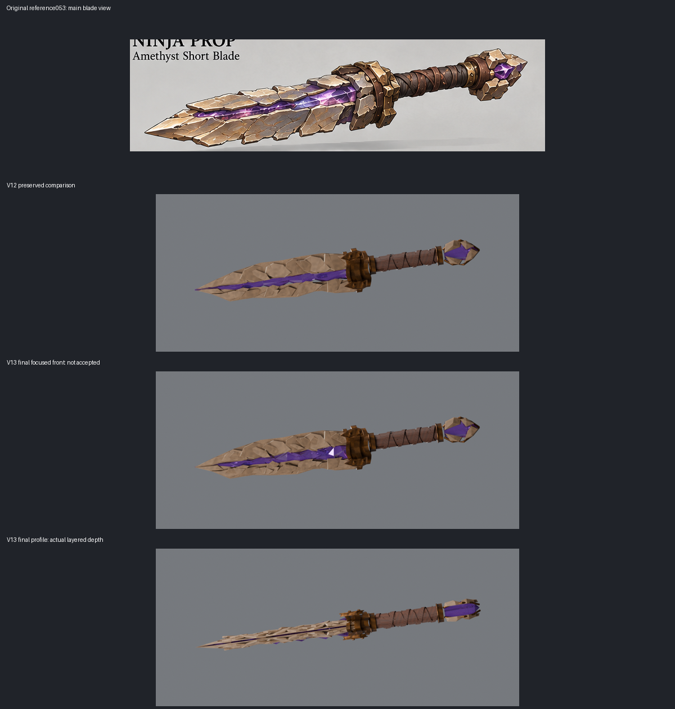

Unequal crystal facets and additional thin terraces. Remaining gates: tile-like primary cells, long profile substrate, simplified collar/pommel/wrap. Two CPU views only.

Evidence and limitations · GLB · Blender source